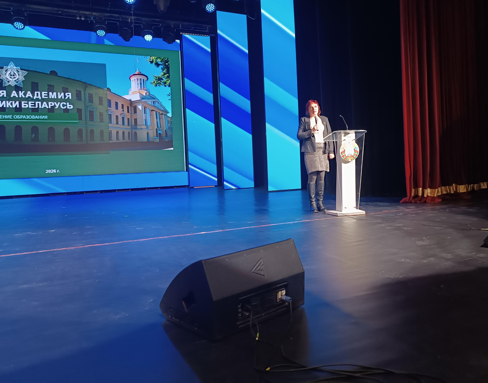
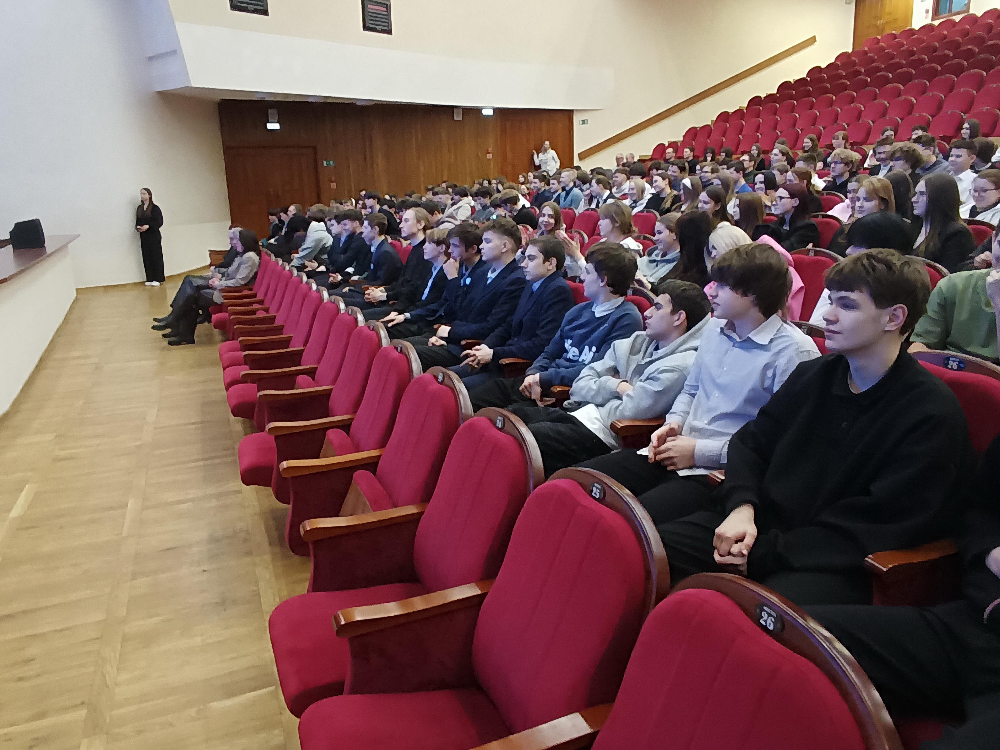
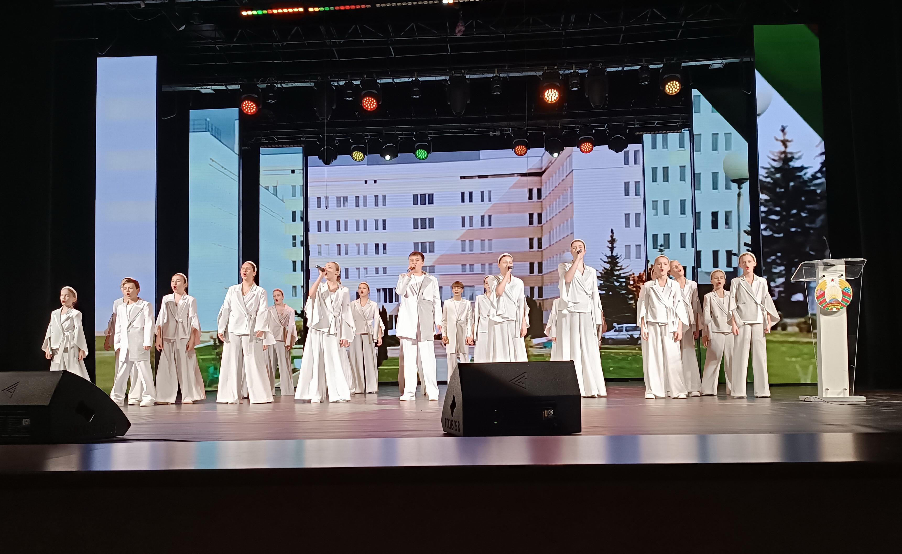
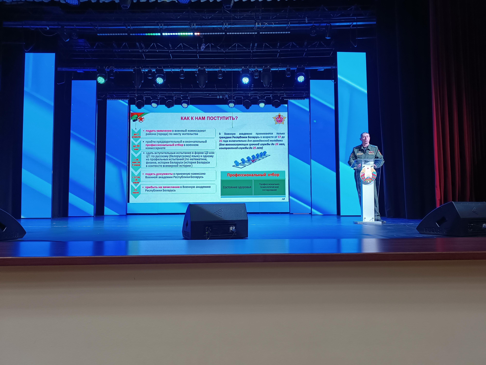
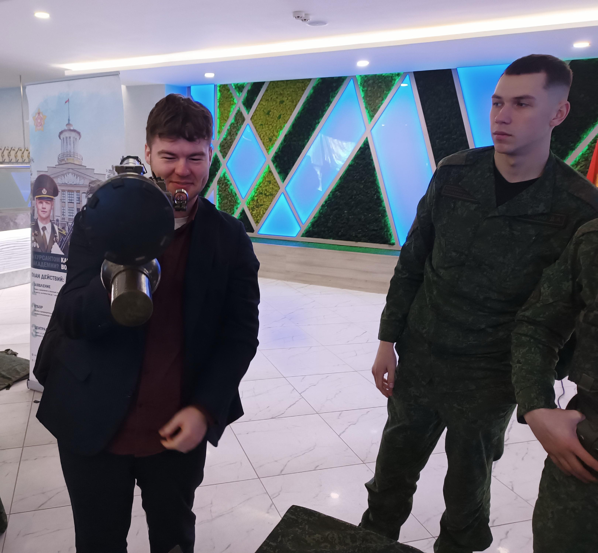
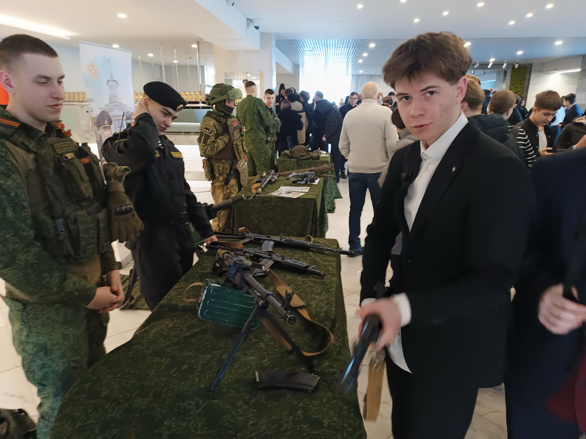
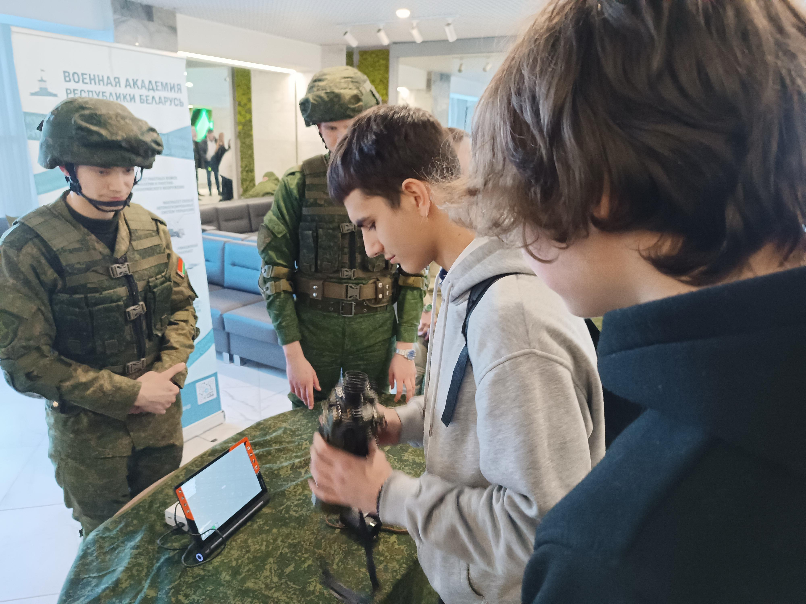

ПРОФОРИЕНТАЦИОННАЯ ВСТРЕЧА С АГИТАЦИОННОЙ БРИГАДОЙ УЧРЕЖДЕНИЯ ОБРАЗОВАНИЯ «ВОЕННАЯ АКАДЕМИЯ РЕСПУБЛИКИ БЕЛАРУСЬ»
17 февраля учащиеся 11-х классов Государственного учреждения образования «Гимназия №1 г. Борисова» приняли участие в профориентационной встрече с агитационной бригадой учреждения образования «Военная академия Республики Беларусь», которая прошла на базе Дворца культуры имени М.Горького.


Открыла мероприятие в большом зале Дворца культуры главный специалист отдела воспитательной и идеологической работы и охраны детства управления по образованию Борисовского района Ирина Будникова. В своем выступлении Ирина Анатольевна отметила значимость военных профессий в современных реалиях и представила гостей.
Начальник авиационного факультета академии полковник Игорь Белекало, рассказал ребятам историю формирования учреждения образования и довел специальности, на которые осуществляется набор в академию, порядок и сроки подачи документов, прохождения профотбора и медицинской комиссии, а также продемонстрировал мотивационный ролик о ВУЗе. По окончанию выступления Игорь Иосифович ответил на все возникшие вопросы.


Мероприятие сопровождалось концертной программой, подготовленной творческими коллективами Борисовского района.
В фойе Дворца культуры для ребят была организована выставка вооружения и снаряжения различных родов войск. По каждому образцу вооружения можно было получить профессиональную консультацию от представлявших их курсантов и офицеров Военной академии.


